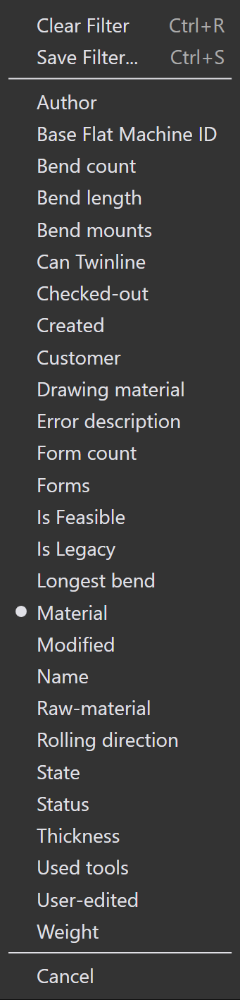
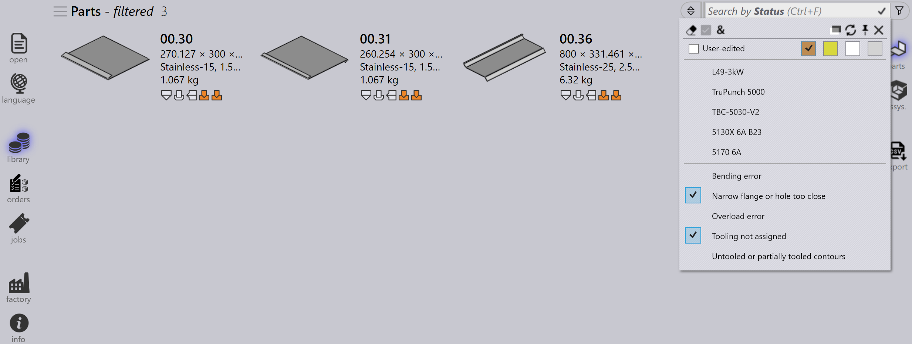
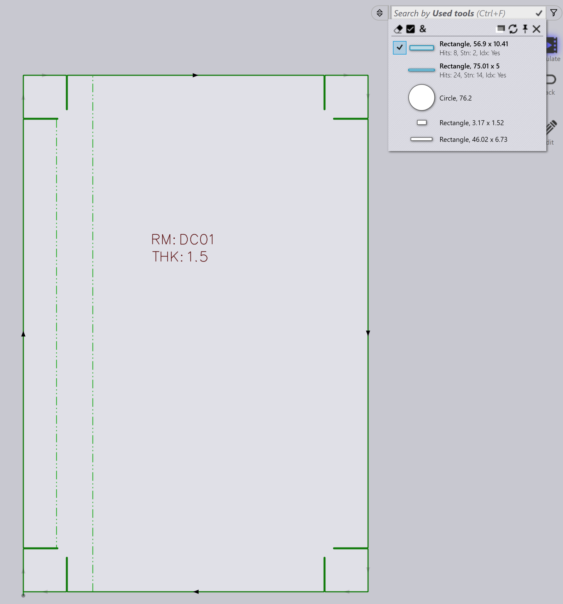

Osasuodattimet
Osakirjaston suodattimien avulla voit nopeasti hakea ja paikantaa osia kirjastossa soveltamalla tiettyj\u00e4 ehtoja. Rajaamalla tulokset vain osiin, jotka t\u00e4ytt\u00e4v\u00e4t ehtosi, n\u00e4m\u00e4 suodattimet helpottavat olennaisten osien hallintaa ja k\u00e4ytt\u00f6\u00e4 tehokkaasti.

State
-
K\u00e4yt\u00e4 State -suodatinta hakeaksesi osia niiden nykyisen tilan perusteella.
-
Avattava valikko n\u00e4ytt\u00e4\u00e4 kaikki soveltuvat tilat riippuen k\u00e4ytett\u00e4viss\u00e4 olevista kirjaston osista.
-
Tilaluettelo muuttuu dynaamisesti valittujen osien ja niiden tilan mukaan.
-
Valitse esimerkiksi Material Missing n\u00e4hd\u00e4ksesi osat, joiden materiaalitila on ratkaisematta.

Status
-
K\u00e4yt\u00e4 Status -suodatinta hakeaksesi osia ty\u00f6st\u00f6jen tilan perusteella.
-
Avattava valikko n\u00e4ytt\u00e4\u00e4 ty\u00f6st\u00f6jen tilat v\u00e4rillisin\u00e4 laatikoina sek\u00e4 kaikki k\u00e4ytett\u00e4viss\u00e4 olevat koneet ja niihin soveltuvat virheet.
-
V\u00e4rilliset laatikot edustavat seuraavia tiloja:
-
Valkoinen: Ty\u00f6st\u00f6t OK
-
Oranssi: Ty\u00f6st\u00f6iss\u00e4 on virhe
-
Keltainen: Ty\u00f6st\u00f6iss\u00e4 on varoitus
-
Harmaa: Ty\u00f6st\u00f6t vaimennettu
-
-
Jos osalla on kapea laippa- tai ty\u00f6st\u00f6\u00e4 ei m\u00e4\u00e4ritetty -virheit\u00e4, n\u00e4iden valitseminen n\u00e4ytt\u00e4\u00e4 kyseiset osat.

-
Osat, joiden ty\u00f6st\u00f6t on vaimennettu valitulla koneella, n\u00e4ytet\u00e4\u00e4n napsauttamalla harmaata laatikkoa.
Bend mounts
-
K\u00e4yt\u00e4 Bend mounts -suodatinta hakeaksesi osia k\u00e4ytetyn taivutusty\u00f6kalun perusteella.
-
Avattava valikko n\u00e4ytt\u00e4\u00e4 kaikki k\u00e4ytett\u00e4viss\u00e4 olevat taivutusty\u00f6kalut, ja niit\u00e4 voi suodattaa ty\u00f6kalun nimen, tyypin (st\u00e4mppi, hanhenkaula, s\u00e4de jne.) tai kuvauksen mukaan.
-
Valitse useita ty\u00f6kaluja ja napsauta Match all lajitellaksesi ty\u00f6kalut, jotka k\u00e4ytt\u00e4v\u00e4t molempia valittuja ty\u00f6kaluja.
Used tools
-
Suodatus Used tools -kohdan mukaan toimii samalla tavalla kuin suodatus Bend mounts -kohdan mukaan.
-
Ty\u00f6kalukuvakkeet n\u00e4ytet\u00e4\u00e4n suhteellisissa kokoissa (ei tarkkoja, vaan suhteellisia).
-
Kun ty\u00f6st\u00f6jen esikatselu on avoinna, hiiren vieminen ty\u00f6kalun p\u00e4\u00e4lle suodatinluettelossa korostaa kyseisen ty\u00f6kalun esikatseluruudussa.
-
Useita ty\u00f6kaluja voidaan valita ja soveltaa k\u00e4ytt\u00e4m\u00e4ll\u00e4 Match all.
